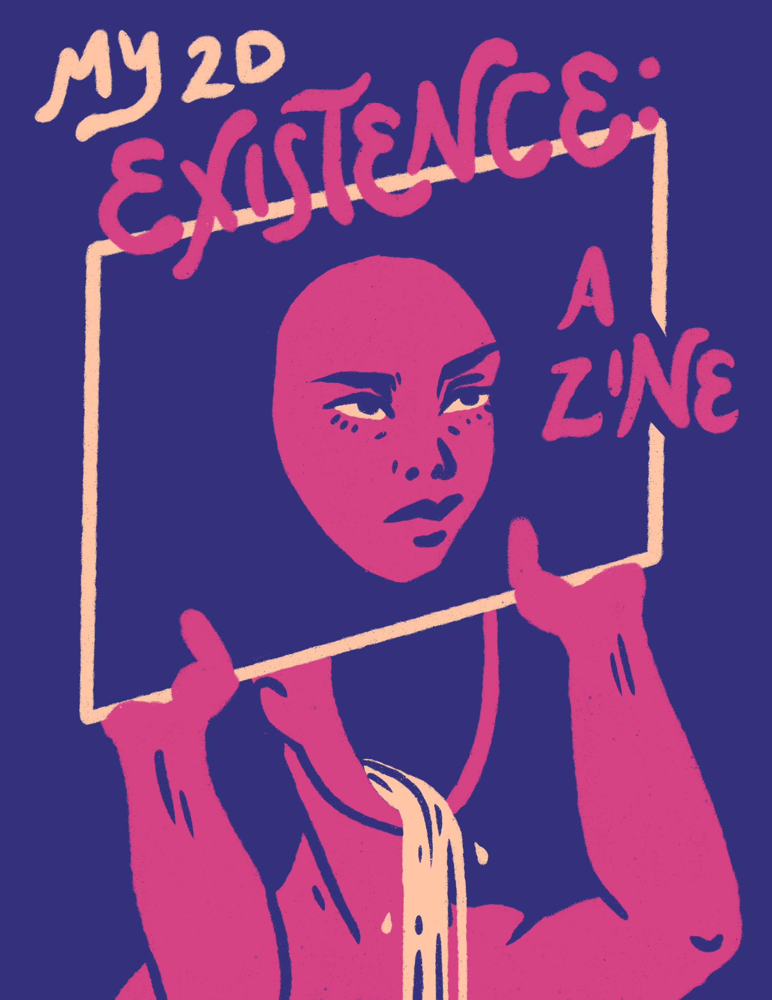
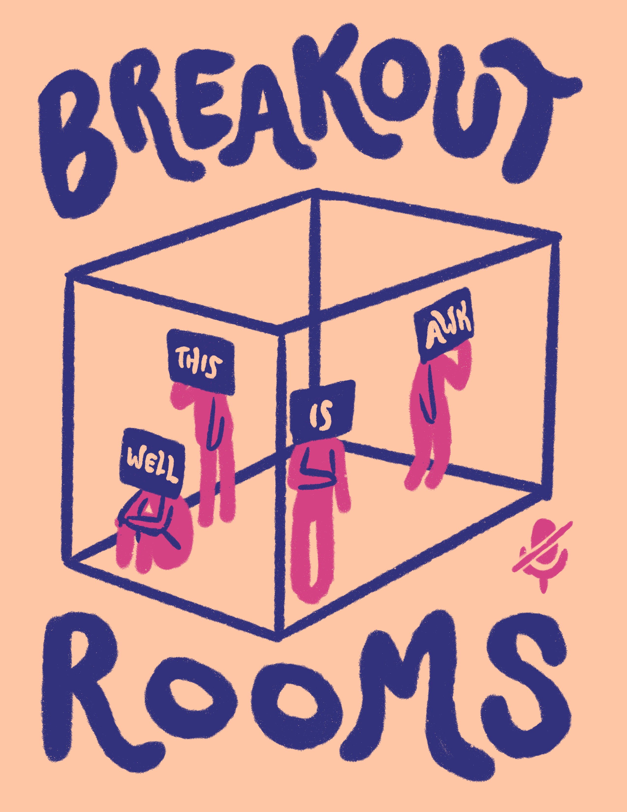
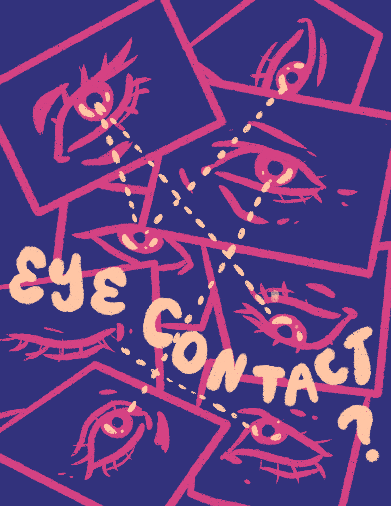

My intro media studies (CMS.100) professor is a firm believer in “a picture is worth a thousand words,” so he let us create any form of media for our final project. I chose to create a zine about Zoom and its media affordances (or the lack thereof).
The term ‘zine’ comes from the shortened syllable of magazine, as it’s often a collection of images and words. Zines can refer to any self published pamphlet. I think that’s where the charm of zines come from — they’re supposed to look handmade, self published, DIY’ed, a raw distillation of one’s ideas and experiences and stories onto paper. Zoom was one of the defining experiences of this year, making me feel connected with friends from thousands of miles away at times yet hopelessly isolated at other times.

My zine is titled “My 2D Existence.” To many of the people I’ve met this year, my physical existence is confined to a 2D rectangle. Conversely, these people are confined to a similar physical 2D existence to my eyes. But metaphorically speaking, people can’t be confined to only two dimensions, or even three for that matter. People are wonderfully multifaceted, and I feel like I’ve gotten to know multiple dimensions of the people I’ve become closest to. Or have I? What if when I finally meet people in real life, I realize that I didn’t get to know them in any dimension at all? I don’t normally fear this, but this thought creeps into my mind when I’m feeling the most alone.

Breakout rooms… this term is quite loaded. When everyone’s mics/cameras are turned off in a breakout room, it feels like being confined in a small room with faceless strangers. I’m surprised that how out of all the human emotions/interactions, awkwardness and uncomfortableness translate so easily onto a virtual platform. Thankfully my media studies classmates are pretty good about making an effort to engage, and our discussions are usually a fun time. But even when people are making an effort to engage, awkwardness is inevitable when everyone’s staring at the screen blank eyed wondering if someone else is going to speak first, when two people start talking at the same time and Zoom makes both sound jumbled. I also miss small group discussions in a physical classroom. Breakout rooms make the discussion feel isolated from the rest of the class, without the background noise and occasional cross pollination of ideas between groups that you get in a physical classroom.

This was inspired by something my prof brought up early in the semester: the idea that you can’t make eye contact on Zoom. You can stare at someone’s Zoom rectangle, but they won’t know that. Eye contact is a form of acknowledgement that you see them in both the literal sense and the metaphorical sense. Metaphorical sense as in letting someone know that their existence matters to you. I guess in real life, the disconnect from lack of eye contact isn’t so intense as I make it sound like. But I suppose my melodramatic verbalization of that abstract feeling comes from the human desire to be seen, to feel mattered.